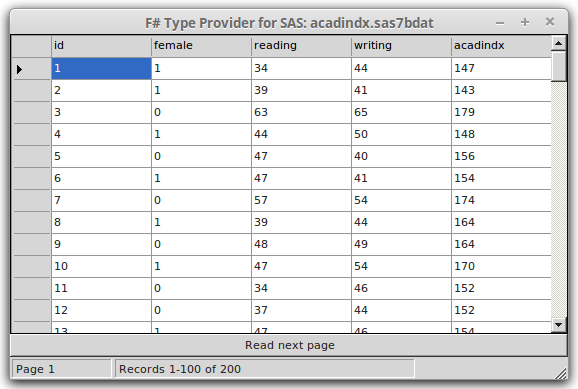

The SAS dataset (sas7bdat) type provider allows exploratory
programming with SAS files and provides native access
to SAS datasets. No SAS software or OLE DB providers required.
If you are using F# Interactive, you first need to reference the SAS type
provider assembly. Assuming you obtain the package from NuGet and the assembly
is in packages, this would look as follows:
#I @"packages/FSharp.Data.Toolbox.Sas.0.3/lib/net40"
#r "FSharp.Data.Toolbox.Sas.dll"
open FSharp.Data.Toolbox.Sas
The library gives you a parameterized type provider SasFileTypeProvider that
takes the SAS data file as an argument:
[<Literal>]
let sasPath = @"../tests/FSharp.Data.Toolbox.Sas.Tests/files/acadindx.sas7bdat"
let sasFile = new SasFileTypeProvider<sasPath>()
After openning the dataset, you can call methods to access
SAS metadata and the data itself.
The following examples show how to access meta-information about SAS dataset.
let datasetName = sasFile.Header.DataSet.Trim()
let architecture = sasFile.Header.Bits
let rowCount = sasFile.MetaData.RowCount
// Get a list of dataset columns
let cols = sasFile.MetaData.Columns
printfn "Number of columns: %d" (cols |> Seq.length)
printfn "Names of columns: %s" (cols |> Seq.map (fun col -> col.Name) |> String.concat ", ")
Good for exploratory programming. IntelliSense access to column names.
// read sixth row of data
let row = sasFile.Observations |> Seq.skip 5 |> Seq.head
printfn "Column 'id' value: %A" row.id
printfn "Column 'reading' value: %A" row.reading
The following examples show a couple of calculations that you can write
using the standard F# library functions over the data obtained using the type provider:
// sum first 10 'reading' variable values
sasFile.Observations
|> Seq.take 10
|> Seq.sumBy ( fun obs -> obs.reading )
// calculate mean
let readingMean =
sasFile.Observations
|> Seq.averageBy (fun obs -> obs.reading )
// standard deviation
let readingStdDev =
let sum =
sasFile.Observations
|> Seq.map (fun obs -> (obs.reading - readingMean) ** 2.0)
|> Seq.sum
sqrt (sum / Seq.length sasFile.Observations)
// min
sasFile.Observations
|> Seq.map (fun obs -> obs.reading)
|> Seq.min
// ...and max
sasFile.Observations
|> Seq.map (fun obs -> obs.reading)
|> Seq.max
'query { expression } ' syntax can be used to access SAS dataset
// multiply 'reading' by 'writing' and sum
query {
for obs in sasFile.Observations do
sumBy (obs.reading * obs.writing)
}
// ..is equivalent to:
sasFile.Observations
|> Seq.map (fun obs -> obs.reading * obs.writing)
|> Seq.sum
You can use other constructs available inside F# query expressions to
filter the data or perform aggregations:
// filter data
query {
for obs in sasFile.Observations do
where (obs.female = Number 1. )
select obs.female
}
// aggregate
query {
for obs in sasFile.Observations do
where (obs.female <> Number 1. )
count
}
query {
for obs in sasFile.Observations do
where (obs.female <> Number 1. )
sumBy obs.writing
}
The following is a slightly more interesting example which joins data from two data sets:
// join two datasets
[<Literal>]
let crimePath = @"../tests/FSharp.Data.Toolbox.Sas.Tests/files/crime.sas7bdat"
let crimeFile = new SasFileTypeProvider<crimePath>()
[<Literal>]
let statesPath = @"../tests/FSharp.Data.Toolbox.Sas.Tests/files/states.sas7bdat"
let statesFile = new SasFileTypeProvider<statesPath>()
let trim x =
let (Character s) = x
s.Trim()
query {
for crime in crimeFile.Observations do
join state in statesFile.Observations
on (trim crime.State = trim state.State)
select (crime.murder_rate, state.State)
}
Can be used for bulk data processing or converting SAS files to text files.
let valueToText value =
match value with
| Number n -> n.ToString()
| Character s -> s.Trim()
| Time t -> t.ToString("HH:mm:ss")
| Date d -> d.ToString("yyyy-MM-dd")
| DateAndTime dt -> dt.ToString("O")
| Empty -> ""
sasFile.Rows
|> Seq.take 100
|> Seq.iter (fun row ->
let line =
row
|> Seq.map valueToText
|> String.concat ","
printfn "%s" line )
We can display the data in a grid.
open System.Windows.Forms
// Create a window with a grid
let frm =
new Form(TopMost = true, Visible = true,
Text = "F# Type Provider for SAS: " + System.IO.Path.GetFileName sasFile.FileName,
Width = 600, Height = 600)
let grid = new DataGridView(Dock = DockStyle.Fill, ReadOnly = true)
let btn = new Button(Text = "Read next page", Dock = DockStyle.Bottom)
let status = new StatusBar(ShowPanels = true, Dock = DockStyle.Bottom)
let pageStatus = new StatusBarPanel(Text = "Page")
let recordStatus = new StatusBarPanel(Text = "Records", Width = 300 )
status.Panels.Add pageStatus
status.Panels.Add recordStatus
frm.Controls.Add grid
frm.Controls.Add btn
frm.Controls.Add status
let pageSize = 100
let read page =
sasFile.Observations
|> Seq.skip (pageSize*(page - 1))
|> Seq.truncate pageSize
// Add columns
let columns = sasFile.MetaData.Columns
grid.ColumnCount <- columns.Length
for i = 0 to columns.Length - 1 do
grid.Columns.[i].HeaderText <- columns.[i].Name
// Display data
let show page =
let data = read page
grid.Rows.Clear()
pageStatus.Text <- sprintf "Page %i" page
recordStatus.Text <- sprintf "Records %i-%i of %i"
<| (page-1)*pageSize + 1
<| min (page*pageSize) sasFile.MetaData.RowCount
<| sasFile.MetaData.RowCount
for row in data do
let values = [| for value in row -> valueToText value |]
let gridRow = new DataGridViewRow()
gridRow.CreateCells grid
for col = 0 to columns.Length - 1 do
gridRow.Cells.[col].Value <- values.[col]
grid.Rows.Add gridRow |> ignore
let mutable page = 1
btn.Click.Add(fun _ ->
if page*pageSize < sasFile.MetaData.RowCount then
page <- page + 1
else
page <- 1
show page
)
show page

Multiple items
namespace FSharp
--------------------
namespace Microsoft.FSharp
Multiple items
namespace FSharp.Data
--------------------
namespace Microsoft.FSharp.Data
namespace FSharp.Data.Toolbox
namespace FSharp.Data.Toolbox.Sas
Multiple items
type LiteralAttribute =
inherit Attribute
new : unit -> LiteralAttribute
<summary>Adding this attribute to a value causes it to be compiled as a CLI constant literal.</summary>
<category>Attributes</category>
--------------------
new : unit -> LiteralAttribute
val sasPath : string = "../tests/FSharp.Data.Toolbox.Sas.Tests/files/acadindx.sas7bdat"
val sasFile : obj
type SasFileTypeProvider =
val datasetName : obj
val architecture : obj
val rowCount : obj
val cols : seq<Column>
val printfn : format:Printf.TextWriterFormat<'T> -> 'T
<summary>Print to <c>stdout</c> using the given format, and add a newline.</summary>
<param name="format">The formatter.</param>
<returns>The formatted result.</returns>
module Seq
from Microsoft.FSharp.Collections
<summary>Contains operations for working with values of type <see cref="T:Microsoft.FSharp.Collections.seq`1" />.</summary>
val length : source:seq<'T> -> int
<summary>Returns the length of the sequence</summary>
<param name="source">The input sequence.</param>
<returns>The length of the sequence.</returns>
<exception cref="T:System.ArgumentNullException">Thrown when the input sequence is null.</exception>
val map : mapping:('T -> 'U) -> source:seq<'T> -> seq<'U>
<summary>Builds a new collection whose elements are the results of applying the given function
to each of the elements of the collection. The given function will be applied
as elements are demanded using the <c>MoveNext</c> method on enumerators retrieved from the
object.</summary>
<remarks>The returned sequence may be passed between threads safely. However,
individual IEnumerator values generated from the returned sequence should not be accessed concurrently.</remarks>
<param name="mapping">A function to transform items from the input sequence.</param>
<param name="source">The input sequence.</param>
<returns>The result sequence.</returns>
<exception cref="T:System.ArgumentNullException">Thrown when the input sequence is null.</exception>
val col : Column
Column.Name: string
module String
from Microsoft.FSharp.Core
<summary>Functional programming operators for string processing. Further string operations
are available via the member functions on strings and other functionality in
<a href="http://msdn2.microsoft.com/en-us/library/system.string.aspx">System.String</a>
and <a href="http://msdn2.microsoft.com/library/system.text.regularexpressions.aspx">System.Text.RegularExpressions</a> types.
</summary>
<category>Strings and Text</category>
val concat : sep:string -> strings:seq<string> -> string
<summary>Returns a new string made by concatenating the given strings
with separator <c>sep</c>, that is <c>a1 + sep + ... + sep + aN</c>.</summary>
<param name="sep">The separator string to be inserted between the strings
of the input sequence.</param>
<param name="strings">The sequence of strings to be concatenated.</param>
<returns>A new string consisting of the concatenated strings separated by
the separation string.</returns>
<exception cref="T:System.ArgumentNullException">Thrown when <c>strings</c> is null.</exception>
val row : obj
val skip : count:int -> source:seq<'T> -> seq<'T>
<summary>Returns a sequence that skips N elements of the underlying sequence and then yields the
remaining elements of the sequence.</summary>
<param name="count">The number of items to skip.</param>
<param name="source">The input sequence.</param>
<returns>The result sequence.</returns>
<exception cref="T:System.ArgumentNullException">Thrown when the input sequence is null.</exception>
<exception cref="T:System.InvalidOperationException">Thrown when count exceeds the number of elements
in the sequence.</exception>
val head : source:seq<'T> -> 'T
<summary>Returns the first element of the sequence.</summary>
<param name="source">The input sequence.</param>
<returns>The first element of the sequence.</returns>
<exception cref="T:System.ArgumentNullException">Thrown when the input sequence is null.</exception>
<exception cref="T:System.ArgumentException">Thrown when the input does not have any elements.</exception>
val take : count:int -> source:seq<'T> -> seq<'T>
<summary>Returns the first N elements of the sequence.</summary>
<remarks>Throws <c>InvalidOperationException</c>
if the count exceeds the number of elements in the sequence. <c>Seq.truncate</c>
returns as many items as the sequence contains instead of throwing an exception.</remarks>
<param name="count">The number of items to take.</param>
<param name="source">The input sequence.</param>
<returns>The result sequence.</returns>
<exception cref="T:System.ArgumentNullException">Thrown when the input sequence is null.</exception>
<exception cref="T:System.ArgumentException">Thrown when the input sequence is empty.</exception>
<exception cref="T:System.InvalidOperationException">Thrown when count exceeds the number of elements
in the sequence.</exception>
val sumBy : projection:('T -> 'U) -> source:seq<'T> -> 'U (requires member ( + ) and member get_Zero)
<summary>Returns the sum of the results generated by applying the function to each element of the sequence.</summary>
<remarks>The generated elements are summed using the <c>+</c> operator and <c>Zero</c> property associated with the generated type.</remarks>
<param name="projection">A function to transform items from the input sequence into the type that will be summed.</param>
<param name="source">The input sequence.</param>
<returns>The computed sum.</returns>
val obs : obj
val readingMean : int
val averageBy : projection:('T -> 'U) -> source:seq<'T> -> 'U (requires member ( + ) and member DivideByInt and member get_Zero)
<summary>Returns the average of the results generated by applying the function to each element
of the sequence.</summary>
<remarks>The elements are averaged using the <c>+</c> operator, <c>DivideByInt</c> method and <c>Zero</c> property
associated with the generated type.</remarks>
<param name="projection">A function applied to transform each element of the sequence.</param>
<param name="source">The input sequence.</param>
<returns>The average.</returns>
<exception cref="T:System.ArgumentNullException">Thrown when the input sequence is null.</exception>
<exception cref="T:System.ArgumentException">Thrown when the input sequence has zero elements.</exception>
val sum : int
val obs : 'a
val sum : source:seq<'T> -> 'T (requires member ( + ) and member get_Zero)
<summary>Returns the sum of the elements in the sequence.</summary>
<remarks>The elements are summed using the <c>+</c> operator and <c>Zero</c> property associated with the generated type.</remarks>
<param name="source">The input sequence.</param>
<returns>The computed sum.</returns>
val sqrt : value:'T -> 'U (requires member Sqrt)
<summary>Square root of the given number</summary>
<param name="value">The input value.</param>
<returns>The square root of the input.</returns>
val min : source:seq<'T> -> 'T (requires comparison)
<summary>Returns the lowest of all elements of the sequence, compared via <c>Operators.min</c>.</summary>
<param name="source">The input sequence.</param>
<returns>The smallest element of the sequence.</returns>
<exception cref="T:System.ArgumentNullException">Thrown when the input sequence is null.</exception>
<exception cref="T:System.ArgumentException">Thrown when the input sequence is empty.</exception>
val max : source:seq<'T> -> 'T (requires comparison)
<summary>Returns the greatest of all elements of the sequence, compared via Operators.max</summary>
<param name="source">The input sequence.</param>
<exception cref="T:System.ArgumentNullException">Thrown when the input sequence is null.</exception>
<exception cref="T:System.ArgumentException">Thrown when the input sequence is empty.</exception>
<returns>The largest element of the sequence.</returns>
val query : Linq.QueryBuilder
<summary>Builds a query using query syntax and operators.</summary>
custom operation: sumBy ('Value)
Calls Linq.QueryBuilder.SumBy
<summary>A query operator that selects a value for each element selected so far and returns the sum of these values.
</summary>
custom operation: where (bool)
Calls Linq.QueryBuilder.Where
<summary>A query operator that selects those elements based on a specified predicate.
</summary>
union case Value.Number: float -> Value
custom operation: select ('Result)
Calls Linq.QueryBuilder.Select
<summary>A query operator that projects each of the elements selected so far.
</summary>
custom operation: count
Calls Linq.QueryBuilder.Count
<summary>A query operator that returns the number of selected elements.
</summary>
val crimePath : string = "../tests/FSharp.Data.Toolbox.Sas.Tests/files/crime.sas7bdat"
val crimeFile : obj
val statesPath : string = "../tests/FSharp.Data.Toolbox.Sas.Tests/files/states.sas7bdat"
val statesFile : obj
val trim : x:Value -> string
val x : Value
union case Value.Character: string -> Value
val s : string
System.String.Trim() : string
System.String.Trim([<System.ParamArray>] trimChars: char []) : string
System.String.Trim(trimChar: char) : string
val crime : obj
custom operation: join var in collection on (outerKey = innerKey). Note that parentheses are required after 'on'
Calls Linq.QueryBuilder.Join
<summary>A query operator that correlates two sets of selected values based on matching keys.
Normal usage is 'join y in elements2 on (key1 = key2)'.
</summary>
val state : obj
val valueToText : value:Value -> string
val value : Value
val n : float
System.Double.ToString() : string
System.Double.ToString(format: string) : string
System.Double.ToString(provider: System.IFormatProvider) : string
System.Double.ToString(format: string, provider: System.IFormatProvider) : string
union case Value.Time: System.DateTime -> Value
val t : System.DateTime
System.DateTime.ToString() : string
System.DateTime.ToString(format: string) : string
System.DateTime.ToString(provider: System.IFormatProvider) : string
System.DateTime.ToString(format: string, provider: System.IFormatProvider) : string
union case Value.Date: System.DateTime -> Value
val d : System.DateTime
union case Value.DateAndTime: System.DateTime -> Value
val dt : System.DateTime
union case Value.Empty: Value
val iter : action:('T -> unit) -> source:seq<'T> -> unit
<summary>Applies the given function to each element of the collection.</summary>
<param name="action">A function to apply to each element of the sequence.</param>
<param name="source">The input sequence.</param>
<exception cref="T:System.ArgumentNullException">Thrown when the input sequence is null.</exception>
val row : seq<Value>
val line : string
namespace System
namespace System.Windows
val frm : obj
union case ColumnType.Text: ColumnType
namespace System.IO
type Path =
static member ChangeExtension : path: string * extension: string -> string
static member Combine : path1: string * path2: string -> string + 3 overloads
static member EndsInDirectorySeparator : path: ReadOnlySpan<char> -> bool + 1 overload
static member GetDirectoryName : path: ReadOnlySpan<char> -> ReadOnlySpan<char> + 1 overload
static member GetExtension : path: ReadOnlySpan<char> -> ReadOnlySpan<char> + 1 overload
static member GetFileName : path: ReadOnlySpan<char> -> ReadOnlySpan<char> + 1 overload
static member GetFileNameWithoutExtension : path: ReadOnlySpan<char> -> ReadOnlySpan<char> + 1 overload
static member GetFullPath : path: string -> string + 1 overload
static member GetInvalidFileNameChars : unit -> char []
static member GetInvalidPathChars : unit -> char []
...
<summary>Performs operations on <see cref="T:System.String" /> instances that contain file or directory path information. These operations are performed in a cross-platform manner.</summary>
System.IO.Path.GetFileName(path: string) : string
System.IO.Path.GetFileName(path: System.ReadOnlySpan<char>) : System.ReadOnlySpan<char>
val grid : MetaData
val btn : obj
val status : obj
val pageStatus : obj
val recordStatus : obj
val pageSize : int
val read : page:int -> seq<'a>
val page : int
val truncate : count:int -> source:seq<'T> -> seq<'T>
<summary>Returns a sequence that when enumerated returns at most N elements.</summary>
<param name="count">The maximum number of items to enumerate.</param>
<param name="source">The input sequence.</param>
<returns>The result sequence.</returns>
<exception cref="T:System.ArgumentNullException">Thrown when the input sequence is null.</exception>
val columns : Column
Column.Length: int
val i : int
MetaData.Columns: Column array
val show : page:int -> unit
val data : seq<seq<Value>>
val sprintf : format:Printf.StringFormat<'T> -> 'T
<summary>Print to a string using the given format.</summary>
<param name="format">The formatter.</param>
<returns>The formatted result.</returns>
val min : e1:'T -> e2:'T -> 'T (requires comparison)
<summary>Minimum based on generic comparison</summary>
<param name="e1">The first value.</param>
<param name="e2">The second value.</param>
<returns>The minimum value.</returns>
val values : string []
val gridRow : obj
val col : int
type Value =
| Number of float
| DateAndTime of DateTime
| Date of DateTime
| Time of DateTime
| Character of string
| Empty
static member ( * ) : value1:Value * value2:Value -> Value + 2 overloads
static member ( + ) : value1:Value * value2:Value -> Value + 2 overloads
static member ( - ) : value1:Value * value2:Value -> Value + 2 overloads
static member ( / ) : value1:Value * value2:Value -> Value + 2 overloads
static member DivideByInt : value:Value * n:int -> Value
static member Pow : value:Value * n:'a0 -> Value (requires member op_Explicit)
static member Sqrt : value:Value -> Value
static member Zero : Value
val ignore : value:'T -> unit
<summary>Ignore the passed value. This is often used to throw away results of a computation.</summary>
<param name="value">The value to ignore.</param>
val mutable page : int